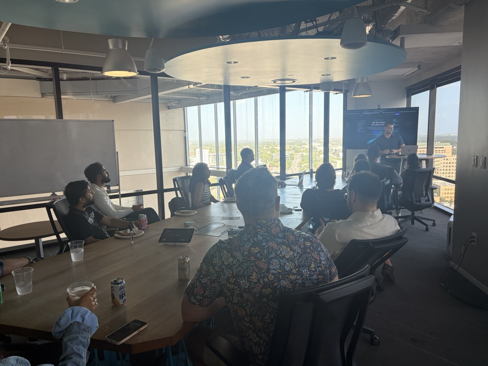

- Real in-person AI programs in the US fall into two groups. University executive programs teach AI strategy in 1 to 10 days. A smaller set of bootcamps has you build working AI tools in the room.
- Tuition on this list runs from $1,500 for a one-day workshop in Manhattan to $24,500 for MIT Sloan's 10-day AI Executive Academy in Cambridge.
- Most programs are open to non-technical professionals. Deep Atlas is the exception here; it is built for working software engineers.
- If none of these is in your city, budget for tuition plus flights, lodging, and meals. Only Stanford's fee on this list includes lodging.
Search for an in-person AI bootcamp and Google mostly shows you what is near you. That is useful if you live in Boston or San Francisco. It is less useful if you live somewhere with no program at all, which is most of the country. Our own students travel to Austin from other states for two weeks of training, so we put the in-person options from across the country in one place.
How we built this list. Every program below runs its AI course in person, in a classroom, in a US city. We left out online-only courses and blended programs where the in-person part is a short add-on to months of online work. Every date, price, length, and audience line comes from the program's own page, checked on November 3, 2026. Links are in the sources at the bottom. There are no affiliate links. We run MakerSquare, so it is on the list, and we have described it the same way as the others.
The list at a glance
| Program | City | Length | Tuition |
|---|---|---|---|
| MIT Sloan AI Executive Academy | Cambridge, MA | 10 days | $24,500 |
| Stanford GSB AI program | Stanford, CA | 1 week | $18,500 (incl. lodging, meals) |
| Wharton Generative AI and Business Transformation | Philadelphia, PA | 4 days | $13,500 |
| Kellogg Leading with AI | Chicago, IL | 4 days | $12,500 |
| Columbia Leadership Intelligence in the Era of AI | New York, NY | 4 days | $10,550 |
| Berkeley Haas AI for Executives | Berkeley, CA | 3 days | $6,500 |
| Deep Atlas Immersive | San Francisco or New York | 1 week | $4,499 |
| MakerSquare Immersive Our program | Austin, TX | 2 weeks | $3,999 |
| Georgia Tech Scheller AI for Business | Atlanta, GA | 3 days | $2,495 |
| FAU Certificate in AI in Business | Boca Raton, FL | 3 days | $2,495 |
| Stony Brook AI for Business workshop | New York, NY | 1 day | $1,500 |
The table is sorted by tuition, not by quality. We have not ranked these programs against each other, because they are built for different people. The sections below say who each one fits.
Programs where you build things
These are closest to what most people mean by "bootcamp." Most of the day goes to hands-on work, and you leave with something running.

Our programMakerSquare Immersive (Austin, TX)
- 2 weeks in person
- Capital Factory, Austin
- $3,999
- No coding needed
Format: two weeks in person at Capital Factory in downtown Austin, Monday to Friday, 9am to 3pm. Next cohort: January 11 to 22, 2027, with enrollment closing January 4.
This is our program. It is built for non-technical professionals: operators, founders, marketers, lawyers, finance people. Each person works on a problem from their own job and ships three things:
- A live website on a real URL
- A working AI agent that does a real task
- An automated workflow that runs without you
Then they demo it at a public Demo Day at the end of week two, like the one in the photo. Housing is not included. When enough out-of-town students enroll in a cohort, we help arrange housing for them; the housing page has the details.
Best for: people who want to build AI tools for their own work and can step away for two weeks.
Deep Atlas Immersive (San Francisco or New York)
Format: one full-time week in person, Saturday to Wednesday, 9am to 6:30pm. Tuition: $4,499. Next cohorts: December 5 in San Francisco and January 23 in New York.
Deep Atlas is written for professional software engineers who want to move into applied AI. Its page says the typical applicant has several years of engineering experience, and people from other roles do well "if they're competent programmers." The in-person week focuses on agentic AI engineering. The rest of its machine learning curriculum is self-paced, before or after the week.
Best for: engineers who already code and want a fast, intense week on building AI systems.
Georgia Tech Scheller AI for Business (Atlanta, GA)
Format: three days on campus at the Scheller College of Business. Tuition: $2,495. Next dates: March 9 to 11, 2027, and September 7 to 9, 2027.
Georgia Tech says no technical background is required. The schedule mixes sessions on generative AI, privacy, regulation, and robotics in business with an experiential workshop and project report-outs on the last day. It sits between a strategy seminar and a hands-on course.
Best for: professionals in the Southeast who want a short, affordable grounding in AI with some hands-on time.
FAU Certificate in Artificial Intelligence in Business (Boca Raton, FL)
Format: three days, 8:30am to 4pm, on campus or live virtual. Tuition: $2,495, or $2,245.50 if you register and pay by December 31, 2026. Next dates: March 1 to 3, 2027.
Florida Atlantic University runs each session both on campus and online, so choose the campus option if in-person is the point. The course is aimed at mid-level managers through executives, and FAU says no coding experience is required. Labs include looking at AI tools, understanding APIs, and building a virtual assistant.
Best for: South Florida professionals who want a broad AI survey with some labs, close to home.
University executive programs
These are run by business schools for managers and executives. Expect faculty lectures, case studies, group work, and peers at a similar career stage. You leave with frameworks and a plan more often than with a working tool. Several review each registration before confirming a seat.
MIT Sloan AI Executive Academy (Cambridge, MA)
Format: 10 days on the MIT campus over two weeks, 7 to 11 hours a day. Tuition: $24,500 for January 18 to 29, 2027. The June 7 to 18, 2027 session is listed at $25,900.
A joint program from MIT Sloan and the Schwarzman College of Computing. It covers both the technical and business sides of AI and includes hands-on workshops and a capstone on the last day. Completing it earns an MIT Sloan Executive Certificate in Digital Business. MIT says it is designed for senior executives and experienced leaders in technical or non-technical roles.
Best for: senior leaders with a large budget who want the deepest university option on this list.
Stanford GSB, Harnessing AI for Breakthrough Innovation and Strategic Impact (Stanford, CA)
Format: one week in person on the Stanford campus. Tuition: $18,500, which includes private accommodations, all meals, and course materials. Next dates: April 4 to 9, 2027, then July 11 to 16 and November 7 to 12, 2027.
Faculty come from the business school, the Institute for Human-Centered AI, engineering, law, and medicine. Stanford describes it as non-technical and says it is ideal for people with little or no technical AI expertise. Seats are confirmed on a rolling basis.
Best for: senior executives deciding where AI investment makes sense. It is the only program on this list where the fee covers lodging, so the gap with cheaper options is smaller than the tuition suggests.
Wharton Generative AI and Business Transformation (Philadelphia, PA)
Format: four days in Philadelphia. Tuition: $13,500. Dates: run periodically; check Wharton's site for the next session.
Led by faculty from the Wharton AI and Analytics Initiative. Sessions mix lectures, group activities, case studies, and industry panels, with topics running from large language models and retrieval-augmented generation to workflow redesign and AI governance. Wharton names C-suite leaders, product, marketing, sales, and strategy executives, and consultants as the audience.
Best for: executives who need to set a company-wide generative AI plan.
Kellogg Leading with AI (Chicago, IL)
Format: four days at Wieboldt Hall on Northwestern's Chicago campus. Tuition: $12,500, not including accommodations. Next dates: April 12 to 15, 2027.
Formerly called Leading with Advanced Analytics and Artificial Intelligence, and the content still leans toward analytics. You learn to tell good analysis from bad, run a predictive analytics simulation, and plan how to build AI and analytics teams.
Best for: senior and functional leaders who manage data and AI teams and need to judge their work.
Columbia Leadership Intelligence in the Era of AI (New York, NY)
Format: four days in person at Columbia's Manhattanville campus. Tuition: $10,550. Next dates: May 24 to 27, 2027.
This one is about decisions more than technology. It teaches Columbia's Quantitative Intuition framework for making calls with incomplete data, with hands-on exercises using AI tools and a decision-making simulation. It is open to executives at all levels.
Best for: leaders whose problem is too much data and too few clear decisions.
Berkeley Haas AI for Executives (Berkeley, CA)
Format: three days at the Haas School of Business, about 8.5 hours a day. Tuition: $6,500. Next dates: March 29 to 31, 2027.
Covers agentic AI systems, how to drive AI adoption inside an organization, and the ethical questions that come with it. Berkeley says the faculty director updates the program for every cohort, and it includes hands-on AI and strategy exercises.
Best for: leaders who want a short, current strategy program in the Bay Area at about half the price of the longer ones.
Stony Brook AI for Business: An Executive Workshop (New York, NY)
Format: one day, 8:30am to 5:30pm, at the SUNY Global Center on East 55th Street in Manhattan. Tuition: $1,500, or $1,200 each for three or more people from one company. Seats are capped at 30. Check Stony Brook's site for the next date.
Stony Brook is direct about what this is. You will not learn to code or do hands-on development. You will leave with a shortlist of AI opportunities for your organization and a written 90-day plan with named owners. Expect 45 to 60 minutes of pre-work.
Best for: VPs and directors in the New York area who need an AI plan and can spare one day, not a week.
How to choose an in-person AI program
Start with what you want to be able to do when you get back. If the answer is "decide what my company should do about AI," a business school program fits. If it is "build the tool myself," pick one of the build programs. The two goals call for different programs.
Then check these five things on the program's own page:
- Prerequisites. Deep Atlas expects you to program. Most of the others say no technical background is needed.
- Share of hands-on time. Read the sample schedule. Lectures and panels are useful, but they do not leave you with a working tool.
- What you leave with. A certificate, a 90-day plan, or something deployed. Programs say this plainly if you look.
- Cohort size and peers. Executive programs put you with other senior leaders. Smaller build cohorts give each person more instructor time.
- Whether in-person is the only format. Some schools sell the same session online and on campus. If the room is the reason you are going, make sure you are booking the room.
Is an in-person AI program worth traveling for?
It can be, if you budget for the whole trip and not just the tuition. The total cost is:
Tuition + travel + lodging + meals + time away from work.
Lodging is the biggest swing. Stanford's $18,500 includes private accommodations and all meals. Kellogg's $12,500 does not include accommodations. At MakerSquare, tuition is $3,999, and you also pay roughly $15 to $30 in AI service fees during the program plus your own housing for two weeks. Length matters too. A three-day program means two or three hotel nights. A two-week program means two weeks of rent somewhere.
What you get for that spend is time with no other job to do. You are not checking in between meetings or watching a recording at 10pm. For many people that focus is the reason to go in person at all, and it is easier to protect when you are in another city. If you cannot step away for the length of a program, a shorter one close to home is the better choice, even if it covers less.
One practical step before you book: confirm the dates are still open and the price has not changed. Program pages update often, and the dates above were current on November 3, 2026.
If you want to build AI tools for your own work, MakerSquare is two weeks in person in Austin, $3,999, with no coding background required. The next cohort starts January 11, 2027. The curriculum shows what you do each day.